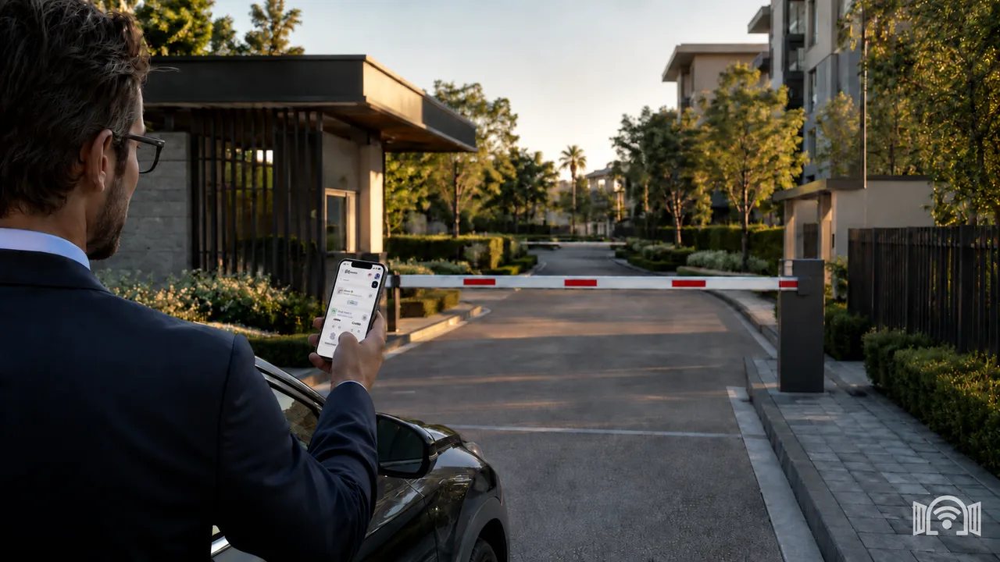

设置一次，每个安息日都生效
在周五和周六各标记一个绿色的大门开启事件，它会每周自动重复。时间表保存在大门自身的设备上并在那里运行，而不是在任何人的手机上。

WIFIGATE 定时事件
提前在应用中设定大门保持开启的时段，例如从犹太安息日开始之前一直到结束之后，时间表每周自动重复。到了安息日当天，没有人需要按遥控器、打开应用或触碰按钮。
在周五和周六各标记一个绿色的大门开启事件，它会每周自动重复。时间表保存在大门自身的设备上并在那里运行，而不是在任何人的手机上。
节日和安息日一样从傍晚开始，因此要预先为节日添加一次性事件，最多可提前 90 天：节日前夕的事件持续到午夜，节日当天的事件从午夜持续到节日结束。犹太新年、赎罪日、住棚节、喜贺妥拉节、逾越节和七七节就这样加入时间表，每个此类事件在日期过后都会自动删除。
无需在电箱里或大门控制器旁加装额外的定时开关，修改时间也不用请技术人员。定时功能内置于 WIFIGATE，也就是平日里用手机开门的同一套系统；在您设定的时段之外，大门照常运行。
电动大门安息日定时器是一种时间表，在安息日和节日的固定时段让大门保持开启或关闭，这样无需任何人操作大门，人们也能自由进出。在 WIFIGATE 中，时间表内置于连接现有大门控制器的设备：提前在应用中设定最多 50 个事件，以 10 分钟为单位，设备会自行执行，大门无需联网，也无需按月订阅。它没有单独的“安息日模式”开关，而是在应用的定时事件页面中设置。
最后更新：
时间以 10 分钟为单位设定。如果您所在地的安息日在午夜之后才结束，请再在周日添加一个从 00:00 开始的事件。
| 事件 | 总共最多 50 个，包括每周事件和一次性事件 |
|---|---|
| 时间单位 | 10 分钟 |
| 节日 | 节日前夕和节日当天的一次性事件，最多提前 90 天 |
| 开启或关闭 | 绿色事件让大门保持开启，红色事件让大门保持关闭 |
| 时间表存放位置 | 保存在大门的设备上并在那里运行 |
| 大门需要什么 | 只需供电，无需 SIM 卡、路由器或网络 |
| 修改时间 | 在大门旁通过应用修改，无需技术人员 |
| 停电之后 | 时间表会保留，任何一部手机连接大门后，事件即恢复运行 |
| 付费方式 | 设备和安装一次性付费，无按月订阅 |
不需要。时间表保存在大门的设备上并在那里运行，因此安息日当天没有人需要打开应用、按遥控器或触碰按钮。停电时会发生什么，请见下方的单独问题。
WIFIGATE 不对犹太律法问题作出裁定，也不出示任何犹太律法上的认可。从技术上讲，时段在安息日之前设定，安息日当天时间表在设备上自行运行，无需任何人操作。如对您的大门有犹太律法方面的疑问，例如大门的传感器或从大门通过，建议咨询拉比。
可以。节日和安息日一样从傍晚开始，因此要在节日前夕添加一个到午夜为止的一次性事件，并在节日当天添加一个从午夜开始的一次性事件，最多可提前 90 天设置。每个此类事件只在各自的日期运行，两个事件在午夜相接，因此大门连续保持开启。紧邻安息日的节日也用同样的方式，一天接一天地设置。一次性事件不能与同一天的每周事件重叠，因此它只覆盖每周事件未覆盖的时段。
不会。WIFIGATE 不计算点蜡烛时间和安息日结束时间：您设定的时段每周保持不变，直到您修改为止。以耶路撒冷为例，点蜡烛时间从冬季的约 16:00 变化到夏季的约 19:10，因此需要在换季时更新时段，或者提前设定一个适合全年的较宽时段。
时间表保存在设备中，不会被删除。设备没有时钟电池，因此恢复供电后，事件不会运行，直到任何一部手机通过应用连接大门并设定时间。在此之前，大门照常运行，不会保持开启，即使停电发生在安息日期间也是如此。如果安息日之前发生过停电，最好在安息日开始前请人连接一次大门。
设备从连接它的手机获取时间以及夏令时或冬令时的切换。在切换之后、任何一部手机连接之前，事件可能提前或推迟一小时运行。以色列在周五凌晨切换到夏令时，因此那天最好在安息日开始前请人用应用开一次门。
不可以。事件进行期间，来自应用的开门指令会被拒绝，大门保持在设定的状态。设备上的技术人员按钮可以绕过事件，例如在紧急情况下。事件之外，大门照常运行。
可以。红色的大门关闭事件会在您设定的时段让大门保持关闭，绿色事件则让大门保持开启。事件之间不会重叠，因此您可以把一天划分为开启时段和关闭时段，总共最多 50 个事件。
WIFIGATE 连接现有大门或道闸的控制器，因此无需在电箱里另装定时开关；在事件之外，大门仍可照常通过遥控器和按钮使用。如需确认是否兼容您的控制器，请通过 WhatsApp 将大门信息发给我们。
不需要。时间表保存在大门的设备上并在那里运行，无需网络、SIM 卡或路由器。手机直接连接设备，因此需要在大门附近设置事件。
适合住宅楼及业主委员会、物业管理公司、配有电动大门或停车道闸的街区和社区、犹太会堂和各类机构，以及任何需要在安息日和节日让大门保持开启的场所。在共有住宅楼中，建议与住户或业主委员会协调时段。
WIFIGATE 设备和安装只需一次性付费，无按月订阅，也无自动扣款，定时事件功能已包含在内。如需报价，请通过 WhatsApp 给我们发消息。